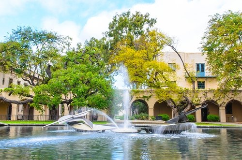
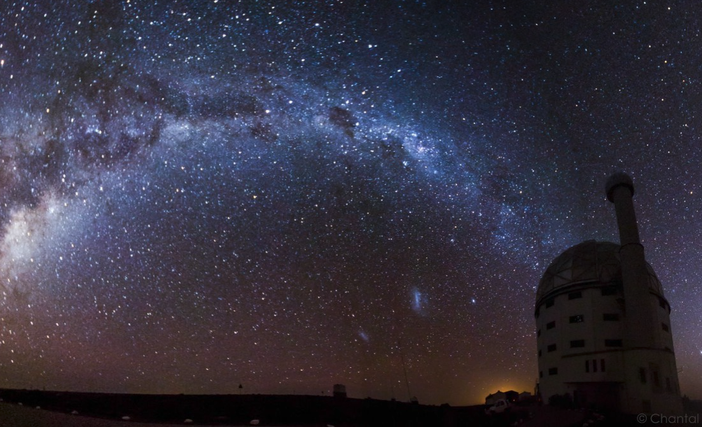
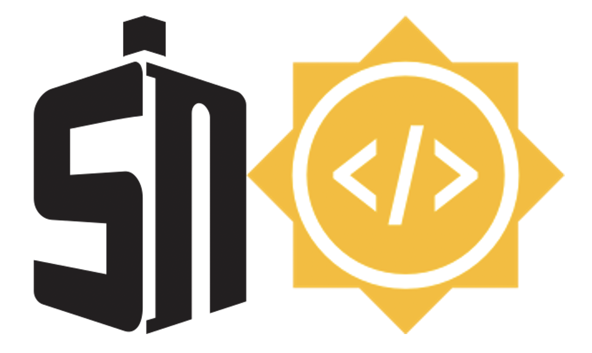

I recently graduated with my Ph.D. and joined CIERA at Northwestern as a Postdoctoral Fellow.
Teaching & Outreach
Teaching Experience
Rutgers University
Graduate Teaching Assistant
During Summer 2023, as an independent instructor, I will be teaching PHY 110 – Astronomy and Cosmology, an online synchronous introductory course about the structure of the universe and astronomical methods.
In AY 2019-2020, as a TA, I instructed students in recitations for PHY 115/116 – Extended Analytical Physics, an introductory course established by Physics Education Researchers at Rutgers for students pursuing STEM degrees who were underprepared by their high schools, many of which were from minority groups. This course was taught in-person & transitioned to a virtual format when the COVID-19 pandemic hit in spring 2020. We emphasized group problem-solving and helped students discover the correct answers for themselves through Socratic questioning. I taught a guest lecture for this class of about 150 students.

In Spring 2022, I graded for PHY 441/541 – Stars and Star Formation, a calculus-based, advanced undergraduate and masters course covering stellar atmospheres, stellar evolution, energy transport, compact objects, supernovae, and star formation. I gave a guest lecture for this class of about 30 students. In Fall 2020 and Fall 2021, I graded and assisted in virtual lectures for PHY 341 – Introduction to Astrophysics, a calculus-based, upper-level undergraduate course exploring topics under the broad-umbrella of gravitation (e.g. Kepler's laws, two-body problems, galaxies, relativity, black holes, cosmology). I also graded PHY 272 - Honors Physics II in Spring 2022, an introduction to electricity and magnetism for physics majors on the Honors track.
The Westminster Schools
Upper School Physics Teacher

In AY 2018-2019 I taught Honors and Regular 9th grade Physics at The Westminster Schools, a private school in Atlanta, GA. I developed all of my own curriculum, including lessons, labs, and tests and projects for topics including waves and sound, optics, 1D motion, projectile motion, circular motion, forces, energy, gravity, and circuits. I focused my lessons on active-learning activities such as hands-on, lab-based, and group problem solving. These active-learning activities were critical to my students’ development of scientific thought patterns.
I also helped coached the state-champion Westminster FIRST Robotics team in their effort to build a robot. This STEM project integrated coding, machine-shop fabrication, electronics and design skills, simulating a true research collaboration. During Westminster's three-week January term, I assisted in teaching a “Game Design” Course and planned a field trip to a virtual reality arcade.
Phillips Academy, Andover
Teaching Fellow & Instructor in Physics
In AY 2017-2018, I taught PHY 400 - College Physics, an algebra-based course covering mechanics and electromagnetism, and PHY 440 – Astronomy, a broad-scope introductory course with night-time observing sessions at Phillips Academy, Andover. At Phillips Academy, my astronomy students operated a telescope, observed various astronomical objects, and used astronomical software.
As a dorm house counselor, I also mentored, counseled, and tutored students living in a high-stress, boarding school environment. I helped coach Outdoor Pursuits, an after-school club with activities such as hiking, biking, cross-country skiing, rock climbing, and camping. I also volunteered on a Gender Studies advisory board where I helped establish a 10-year vision to improve gender equality and led weekly STEM study sessions pairing female students with female tutors.


Physics Laboratory at Caltech
Undergraduate Teaching Assistant
As an Undergraduate Teaching Assistant, I worked with a Graduate Teaching Assistant to instruct students on instrument use and data collection in an intermediate physics laboratory course. I taught the methodology of experimentally confirming scientific theories and accurately propogating and reporting experimental uncertainties.
Mentoring Experience
Research Advising, Rutgers University
Co-Advisor
In AY 2022-2023, I mentored Teresa Boland, an undergraduate honors thesis student, in a project to measure the evolution of supernova emission line velocities from nebular (late-time) phase spectra. She presented a poster at the 241st AAS Meeting in Seattle, WA.
In AY 2023-2024, I mentored undergrad honors thesis student Michaela Schwab. She is leading a publication on extremely late-time HST photometry of SN 2012Z, the only white-dwarf explosion with a companion star detected in pre-explosion imaging.


Google Summer of Code, TARDIS Collaboration
Co-Mentor
In summer 2020, I helped advise a student from India on a project to improve TARDIS’s GUI (graphical user interface) module for identification of spectral lines. This project resulted in a great TARDIS Widget tool that has benefitted the entire TARDIS research community. I regularly use it in my current research.
Summer Science Program (SSP)
Teaching Assistant and Residential Mentor
I attended the Summer Science Program in Westmont, CA in 2012 as a high school student and it gave me the confidence to pursue a career as an astrophysicist. So during the summers of 2016 and 2017, I returned to SSP as a Teaching Assistant and Residential Mentor. For six weeks I mentored students in a research program to calculate the orbital elements of a near-earth asteroid from original observations. I trained students to operate telescopes, assisted them with physics, astronomy and calculus homework sets, and helped them code their own data analysis programs.

Outreach and Volunteer Work
| Organization | Role | Description | Dates |
|---|---|---|---|
| New Brunswick Health Science Technology High School, New Brunswick Middle & High School | Physics demo enthusiast! | With Rutgers Professor Eric Gawiser's group, I bring exciting, hands-on physics demonstrations to underrepresented minority students in my local community. | 2020-2024 |
| Literacy New Jersey | ESL volunteer teacher | For 18 months, I planned and taughted weekly ESL classes for 8 adult Hispanic immigrants in my local community seeking to build a better life for their families (virtually after March 2020). | August 2019 - January 2021 |
| Phillips Academy, Andover Gender Studies Advisory Board | Member | I helped establish a 10-year vision to improve gender equality and led weekly STEM study sessions pairing female students with female tutors. | August 2017 - June 2018 |
| Caltech Stargazing and Lecture Series | Volunteer | I helped set up telescopes and engage the general public in observing astronomical objects after the lectures. | 2017 |
| iChicas at Caltech | Volunteer | I built spectrographs at Caltech with about 20 middle-school Latina girls who were part of iChicas, an after-school program in Los Angeles. | March 2017 |